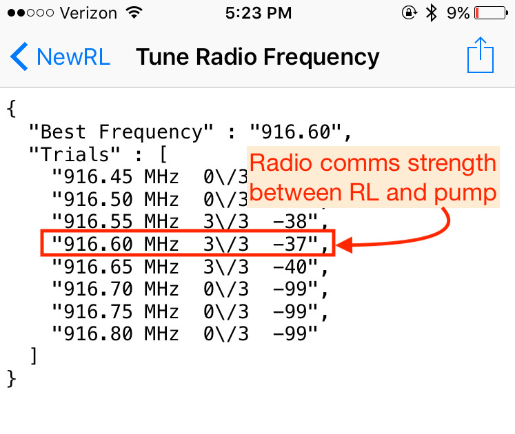

RileyLink⌁
Tuning the Radio⌁
The RileyLink communicates with the pump through radio frequency communications. Numerous factors can influence how well those communications can function...interferences from other devices, temperature, physical blocking, etc.
When your RileyLink and pump first pair together, Loop performs a series of tests that you won't see...they are tuning tests. Basically, RileyLink sends little test messages to the pump and waits for a response. The RileyLink tries this same "ping" to the pump a range of various radio frequencies. The range of radio frequencies it tries is based on the pump you've told RileyLink to expect (Omnipod, Medtronic NA/CA, or Medtronic WW). RileyLink will then record the radio frequencies that provided the strongest response and use that frequency for future pump communications.
Usually this best frequency is pretty constant for any given pump+RL, but during temperature changes it may be that the best frequency is not the one currently set. In the event that RileyLink has prolems communicating with the pump, Loop has code built-in that will automatically tell the RileyLink "hey, try that tuning pump thing again...maybe there's a better frequency we need to try." This retuning is started automatically if pump communications fail for 14 minutes (in other words, two looping cycles).
Knowing a little about the strength of the radio communications will help you troubleshoot Loop errors. When you Tune Radio Frequency in the Riley Link menu, it is testing for the strongest frequency to communicate with the pump. For example, in the screenshot below, the strength of the radio communications with the pump is shown by the last number of the tune. Frequencies with tuning results of -99 means NO communications were established at that frequency. RileyLink will use the strongest frequency tune for its pump communications. In the screenshot, the best frequency returned a result of -37 at a frequency of 916.60 MHz, so RileyLink will set that 916.60 MHz for its pump communications.

Generally, if you have tuning in the -90s, your RileyLink-pump communications will not work. If you have tuning in the -80s, you may have periodic communication failures. If your tuning is in the -70s or better, your communications should be pretty stable.
Experiment with your RileyLink by moving it closer and farther away from the pump. Try putting it on the other side of your body, or put it in a purse. Test the tuning results in real world situations that you think you'd be encountering, such as where you will have the RileyLink placed during overnight charging. Perform tunes at the various distances and situations. This will help you understand how far from the pump your RileyLink can get before it will affect Loop performance.
Bluetooth⌁
RileyLink communicates with your iPhone and Loop app through Bluetooth (BT). If your iPhone has BT issues, your Loop will have failures. There have been reports of BT audio devices (such as BT pairings in your car or home audio BT speakers) interfering with the Loop. If you are finding Loop failures frequently happening at a particular location, you may try to troubleshoot if there are BT problems in the area.
Your BT signal strength can be seen in the Loop settings, under the RileyLink menu, on the Signal Strength line. As you move closer and further away from your phone, you can watch that number dynamically change. This line is not displaying the signal strength of your pump communications discussed above (those are shown in the tuning results screen).

Lights⌁
RileyLink has several lights that you may notice from time to time. There is no 'power' light. If you suspect that your RileyLink is not being powered, try turning it off and on using the small sliding switch. You should see lights in the middle of the board flash when you do this. If they flash, that means the board has power.
-
Red light: Charging light. The red light will remain on while RileyLink is charging, and it will turn off when charging is complete. You may notice the red light turn on periodically even after charging is complete...it's just "topping off".
-
Green light: Bluetooth connection light. The green light will remain on while you have BT connection with your iPhone. If that green light fails to stay on, you should troubleshoot your BT connections. Try restarting BT on your iPhone and/or turning the RileyLink off/on by its power switch.
-
Blue light: Pump communications. If you have an older firmware on your RileyLink, some of the blue lights will flash periodically as it is communicating with the pump. It's just letting you know that it is busy talking and collecting info. You will also see increased blue flashes if you have "Enabled Diagnositic LEDs" for RileyLinks that have the updated firmware (shipping since late August 2018).
A solid blue light that consistenly remains lit on the board could mean one of two things:
-
A temporary issue that can be resolved by rebooting the RileyLink physically (turning the switch off/on), or
-
An electrical short or damage to the board. Sweat and moisture are most likely culprits, so try to keep case free from those environments (don't keep in sports bras or waist band next to skin, for example, while exercising)
If your blue light remains on despite trying a restart, it is time to pull out your backup RileyLink.
Charging⌁
The battery that comes with RileyLink is not likely charged completely when it is shipped, so feel free to charge it up. You'll need a mini-USB cable and 0.5A USB charging power supply like your iPhone power supply. RileyLink takes about 2-4 hours to fully charge (the red light will turn off when fully charged, read note above about red light patterns) and should easily last at least a full day of constant Loop use. Typically, it can go into the 30-hour range without problem. Most people charge their RileyLink each night when they are sleeping. You don't have to worry about leaving the RileyLink plugged in "too long" for charging. It will automatically stop charging the battery when it is fully charged.
Since the best practice is to charge your RileyLink overnight while you sleep, and the battery lasts safely over 24 hours, there is no battery level indicator for the RileyLink. The RileyLink's charge level is not viewable on Nightscout, nor within the Loop app. If you forget to charge your RileyLink overnight, you can recharge it with a portable USB battery in a pinch. A short mini-USB cable could be a good addition to a small gear bag.
Range⌁
The range that your RileyLink will function is heavily dependent on the environment that you are in. Read the section about Tuning to help determine how far your RileyLink can dependably maintain an adequate signal strength in your particular environment. Most people wear the RileyLink in a pocket or carry a belt holster during the day. Typically, RileyLink will need to be closer to the pump than the iPhone. The radio frequency communications will have a shorter range than the BT communications.
Lipo Battery⌁
If you ordered your RileyLink preassembled, you should plug in the battery cable. Please make sure your RileyLink’s battery cable is securely pushed all the way into the socket. Poor battery cable connection can make the Loop communications fail.


Keep your RileyLink and lipo battery protected from damage. Lipo batteries are unsafe when damaged or punctured, so the case is an important part of safe Looping. If your battery is damaged in some way, please disconnect it immediately, and dispose of it (they should be recycled). You can order new batteries on the GetRileyLink website

Removing Lipo Battery⌁
To remove the lipo battery from the RileyLink, please do so slowly and patiently. Work the battery connection side to side slowly to loosen it from the plug. Some people have reported success using small, curved needle nose pliers such as hemostats. Others have used small flathead screwdrivers as shown in this video.